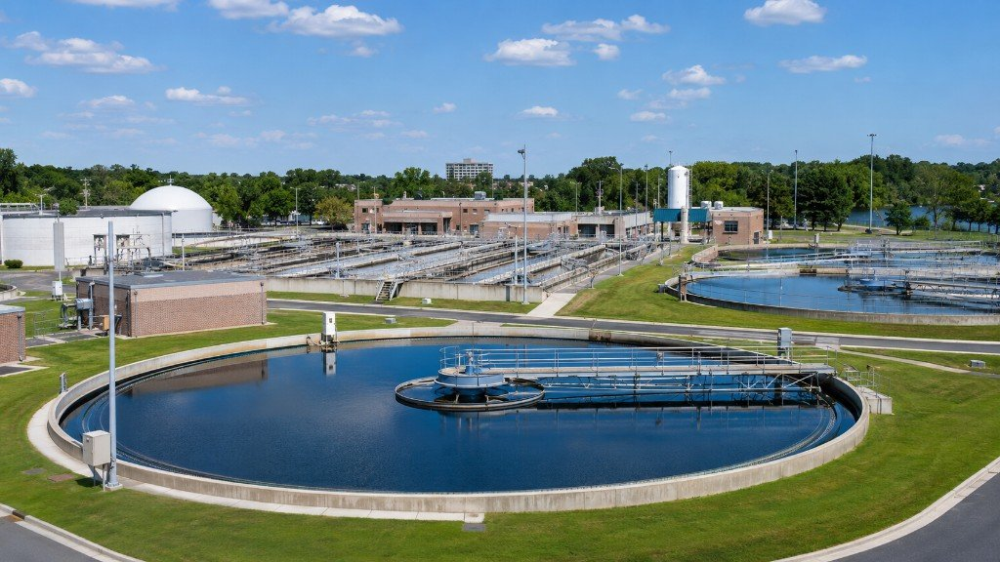

Professional City Water Treatment Systems in Baton Rouge, LA
Capital Water Co. provides city water treatment systems for Baton Rouge households that want to improve municipal water quality at home. Treatment can help reduce chlorine taste, odors, sediment, and other common city-water concerns so showers, cooking, laundry, and drinking water feel cleaner throughout the property.

Better city water at home
Choose Capital Water Co. for Professional City Water Treatment Systems in Baton Rouge, LA
- Solutions Built Around Municipal Water: Capital Water Co. reviews typical city-water complaints such as chlorine taste, cloudy water after main breaks, or sediment from aging neighborhood lines. Recommendations are based on how your household actually uses water, not a generic package that ignores local conditions.
- Careful Installation for Occupied Homes: Capital Water Co. installs city water treatment with attention to shutoff timing, bypass access, and cleanup so families can get back to normal quickly. That matters in Baton Rouge neighborhoods where weekday schedules leave little room for a drawn-out plumbing project.
- Whole-Home Results, Not One-Faucet Fixes: Treating water at the point of entry helps improve quality at showers, washing machines, ice makers, and outdoor hose bibs used for rinsing. Capital Water Co. can still add kitchen reverse osmosis when drinking water needs extra attention.
Municipal water still benefits from treatment
Why Professional City Water Treatment Systems in Baton Rouge, LA Matter for Your Home
- Treated Water Can Still Taste Like Treatment: Municipal systems protect public health, but the same process can leave chlorine, chloramine, or a noticeable odor at the tap. Baton Rouge homeowners often want an in-home layer of filtration that makes daily water more pleasant without giving up city supply reliability.
- Neighborhood Plumbing Can Affect What Reaches Your Tap: Older lines, sediment after hydrant flushing, and interior pipe scale can change how water looks and feels by the time it reaches fixtures. City water treatment helps create a more consistent experience inside the home.
- It Supports Comfort, Cleaning, and Appliances: Better-tasting water, less odor in showers, and reduced sediment can make kitchens and bathrooms easier to live with. Treatment also helps protect fixtures and appliances that run on city water every day.

FREQUENTLY ASKED ・ ANSWERS TO YOUR QUESTIONS
Frequently Asked Questions About City Water Treatment Systems in Baton Rouge, LA
Do City Water Treatment Systems in Baton Rouge, LA replace the need for a refrigerator filter?
A whole-home system can improve water feeding the refrigerator, but some owners still keep an appliance filter as extra protection. Capital Water Co. explains how point-of-entry treatment and point-of-use filters work together.
Can City Water Treatment Systems in Baton Rouge, LA help after a boil-water notice?
Boil-water notices are public-health events that require following local utility guidance. After service is restored, Capital Water Co. can discuss sediment, taste, or odor concerns that sometimes follow main repairs and recommend treatment if household water still feels off.
What should I prepare before City Water Treatment Systems in Baton Rouge, LA are installed?
Clear access to the main water line, a nearby drain if the system requires one, and a sense of your biggest water complaints help the visit go smoothly. Capital Water Co. walks through placement, timeline, and what to expect before work begins.
SERVICE AREA
Find Us
Capital Water Co. provides city water treatment throughout Baton Rouge for homes on municipal supply. From downtown and Mid City to Baker, Central, and Zachary, Capital Water Co. helps local households improve chlorine taste, odor, and sediment with treatment systems designed for everyday city water use.